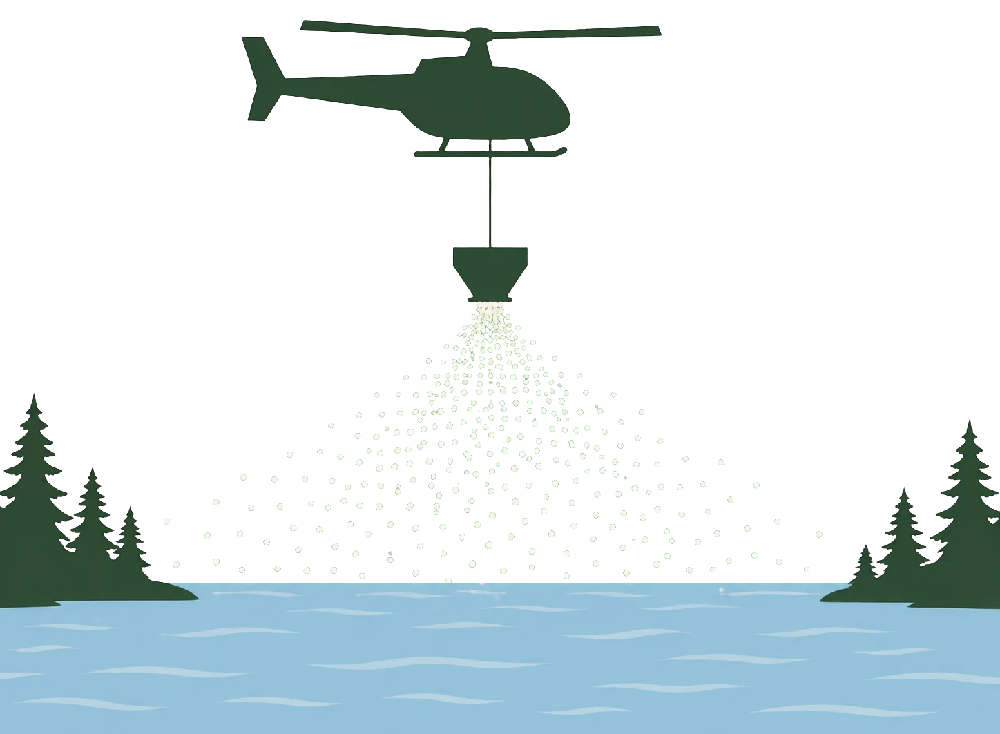
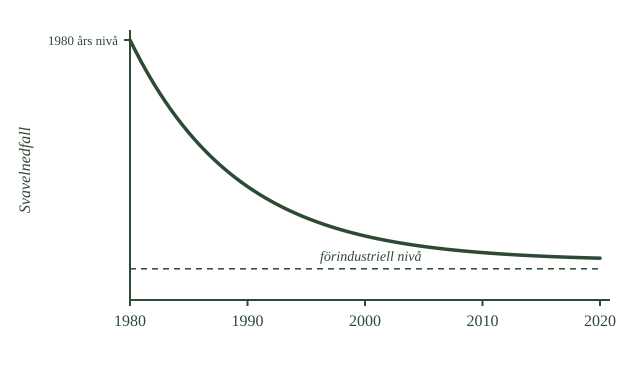

- Den viktigaste åtgärden är att minska utsläppen
- Svavel kan renas ur rökgaser med kalksten
- Katalysatorer i bilar omvandlar kväveoxider
- Internationella avtal krävs, eftersom föroreningar korsar gränser
- Svavelnedfallet har minskat med mer än 80 procent
Nu vet du vad försurningen beror på och vad den ställer till med. Så vad gör man åt det?
Det enda som verkligen löser problemet
Svaret är enkelt att formulera men var svårt att genomföra: släpp ut mindre.
Allt annat är att lindra symptom. Så länge försurande ämnen fortsätter falla ner kommer problemet att finnas kvar.
Att rena svavlet
Svavelutsläppen går att minska på två sätt.
Det första är att välja bränsle med låg svavelhalt. Kol och tjockolja innehåller mycket svavel, naturgas nästan inget.
Det andra är att rena rökgaserna innan de lämnar skorstenen. En vanlig metod heter rökgasavsvavling, och den använder något du känner igen: kalksten.
Kalkstenen är basisk och reagerar med svavelföreningarna i röken. Föroreningen fångas upp innan den kommer ut — samma neutralisationskemi som i en sjö, fast i en skorsten.
Att rena kvävet
Kväveoxiderna är svårare, eftersom de bildas av luften själv och inte går att ta bort i förväg.
Lösningen är att rena efteråt. I bilars avgassystem sitter en katalysator som omvandlar kväveoxiderna till ofarliga ämnen innan de släpps ut.
Samma princip används i större motorer, kraftverk och industrier, med andra tekniska lösningar.
Men teknik räcker inte
Här kommer den svåra delen.
Som du läste i avsnitt 1 färdas luftföroreningar över gränser. Ett land som renar allt kan ändå drabbas av nedfall från grannar.
Därför krävde försurningen något mer än teknik: internationella avtal. Länderna i Europa förband sig att minska sina utsläpp, var och en för sig, för att alla skulle tjäna på det.
Och det fungerade. Svavelnedfallet över Sverige har minskat med mer än 80 procent.
Principen bakom
Det finns en lärdom här som gäller långt utanför kemin.
Det effektivaste är nästan alltid att angripa orsaken till ett problem, inte att reparera skadorna efteråt. Kalkning kan hålla en sjö vid liv, men bara minskade utsläpp kan göra den frisk.
- Bränslen med låg svavelhalt och rökgasavsvavling
- Kalksten används för att fånga svavelföreningar
- Katalytisk rening av kväveoxider i fordon och industri
- Teknik räcker inte — internationellt samarbete krävs
- Bäst är att angripa orsaken, inte skadorna
Den viktigaste åtgärden mot försurning är att hindra de försurande ämnena från att släppas ut från början.
Svavelutsläpp kan minskas på flera sätt. Man kan använda bränslen med låg svavelhalt och rena rökgaser från kraftverk och industrier. Vid rökgasavsvavling kan exempelvis kalksten användas för att fånga upp svavelföreningar innan de lämnar skorstenen.
Kväveoxider kan också minskas med teknisk rening. I bilars avgassystem används katalysatorer som omvandlar kväveoxider till andra ämnen. I större dieselmotorer, kraftverk och industrier kan andra katalytiska reningsmetoder användas.
Men teknik vid enskilda utsläppskällor räcker inte. Eftersom luftföroreningarna kan färdas mellan länder krävs internationellt samarbete. Länderna i Europa har därför ingått avtal där de förbinder sig att minska sina utsläpp.
Resultatet har varit tydligt. Naturvårdsverkets miljöövervakning visar att svavelnedfallet över Sverige har minskat med mer än 80 procent. Kvävenedfallet har också minskat, men betydligt mindre.
Det visar en viktig princip inom miljöarbetet: det effektivaste är att angripa orsaken till problemet, inte bara försöka reparera skadorna efteråt.
Vad en katalysator gör
Standardtexten säger att katalysatorn omvandlar kväveoxider till andra ämnen. Vad den faktiskt gör är värt att förstå, eftersom begreppet återkommer i organisk kemi.
En katalysator är ett ämne som får en reaktion att gå snabbare utan att själv förbrukas. Den deltar i förloppet men kommer ut oförändrad på andra sidan.
Att kväveoxider sönderfaller till kvävgas och syre är i sig energimässigt gynnsamt — det borde ske spontant. Problemet är att det går alldeles för långsamt vid de temperaturer som råder i ett avgasrör.
Katalysatorn löser det genom att erbjuda en annan väg. Kväveoxidmolekylerna fäster tillfälligt vid en yta av platina, palladium eller rodium. Bindningarna i molekylen försvagas när den sitter fast, och atomerna kan byta partner mycket lättare än om de flugit fritt.
Resultatet blir kvävgas och syre — samma ämnen som fanns i luften från början.
Därför måste bensinen vara blyfri
En praktisk följd som förklarar en historisk förändring.
Bly förstör katalysatorn. Blyatomerna binder permanent till ädelmetallytan och blockerar de platser där reaktionen skulle ske. Katalysatorn slutar fungera, och skadan går inte att reparera.
Det kallas att katalysatorn förgiftas.
När katalysatorer infördes i bilar under 1970- och 80-talen måste därför blyad bensin fasas ut. Blytillsatsen hade använts för att förbättra bensinens egenskaper i motorn, och den behövde ersättas med andra ämnen.
Två miljöproblem löstes alltså samtidigt, delvis av en teknisk nödvändighet: kväveoxiderna minskade, och blyutsläppen försvann.
Om modellen: standardtexten nämner katalysatorn som en reningsmetod. Med mekanismen blir den ett exempel på något mer allmänt — att kemi handlar lika mycket om hur fort en reaktion går som om den är möjlig alls.
- Kalkning betyder att man tillsätter kalk till försurade vatten
- Kalken är en bas och neutraliserar syran
- Den ökar också vattnets förmåga att stå emot ny syra
- Kalk är svårlöslig, vilket gör effekten mer långvarig
- Kalkning tar inte bort orsaken och måste upprepas
Att minska utsläppen tar tid, och under tiden finns sjöar som redan skadats. Vad gör man med dem?
Kalk i sjön
Man tillsätter kalk. Det kallas kalkning, och Sverige har gjort det i stor skala sedan 1970-talet.
Kalken som används är finmalen kalksten, samma ämne som du mött flera gånger nu: kalciumkarbonat.
När kalken kommer i det sura vattnet reagerar den med vätejonerna. Vätejonerna förbrukas, och pH stiger.
Det är ren neutralisation — en bas som reagerar med en syra, precis som i föregående delkapitel, fast i en hel sjö.
Kalken stannar kvar
Kalkningen gör två saker, och den andra är nästan viktigare.
Den höjer pH direkt, vilket är det uppenbara.
Men den ökar också vattnets buffertkapacitet — alltså förmågan att stå emot syra som kommer senare. Nästa gång det regnar surt tar vattnet hand om det bättre.
Det beror på att kalk är svårlöslig. Allt löser sig inte på en gång. Överskottet lägger sig på botten och löser sig långsamt, efterhand som det behövs.
Det är samma egenskap du läste om i baserna: kalk är svår att överdosera, och det gör den lämplig för just det här.
Men lagom är viktigt
Mängden måste ändå anpassas till sjön.
Målet är inte att göra vattnet basiskt. Målet är att återställa en vattenkemi där de arter som naturligt hör hemma där kan leva. För mycket kalk skapar ett annat problem i stället för att lösa det.
Det botar inte orsaken
Och här kommer det viktigaste.
Kalkning tar bort symptomet, inte orsaken. Så länge surt nedfall fortsätter förbrukas kalken, och sjön måste kalkas igen. Och igen.
Sverige har kalkat sedan 1977, och det är en av landets största miljöinsatser. Kalk sprids från båtar och helikoptrar, och i rinnande vatten finns särskilda doserare.
- Vad som hänger under helikoptern
- Vad som faller ner mot vattnet
- Var det hamnar

Man ska se det som en skyddsåtgärd: något som håller ett skadat ekosystem vid liv medan naturen långsamt återhämtar sig. Det ersätter inte minskade utsläpp.
- Finmalen kalksten med kalciumkarbonat, \(\ce{CaCO3}\)
- Karbonatjonerna reagerar med vätejoner, pH stiger
- Vattnets buffertkapacitet ökar
- Svårlösligheten ger långvarig effekt men kräver rätt dosering
- En skyddsåtgärd, inte en lösning — Sverige kalkar sedan 1977
När en sjö eller ett vattendrag redan har försurats kan man minska skadorna genom kalkning.
I Sverige används framför allt finmalen kalksten som innehåller kalciumkarbonat, \(\ce{CaCO3}\). När kalken kommer i kontakt med det sura vattnet reagerar karbonatet med vätejoner. Vätejoner förbrukas och pH-värdet stiger.
Detta är samma neutralisationskemi som du tidigare har mött:
syra + bas \(\rightarrow\) mindre sur lösning
Kalkningen ökar dessutom vattnets förmåga att motstå nya tillskott av syra. Man säger att vattnets buffertkapacitet ökar.
Kalciumkarbonat är relativt svårlösligt. Det gör att effekten blir mer långvarig än om man skulle tillsätta en mycket lättlöslig stark bas. Men mängden kalk måste ändå anpassas noggrant till sjön eller vattendraget. Målet är inte att göra vattnet basiskt utan att återställa en vattenkemi där de arter som naturligt hör hemma där kan överleva.
Kalkning tar däremot inte bort själva orsaken till försurningen. Om försurande ämnen fortsätter att tillföras förbrukas kalkens neutraliserande effekt, och kalkningen måste upprepas.
Sverige började med statligt stödd försökskalkning 1977. Kalkning har sedan blivit en av landets största miljövårdsinsatser. Den sker bland annat genom spridning från båt eller helikopter och genom särskilda kalkdoserare i rinnande vatten. Många vatten behöver kalkas återkommande.
Kalkningen är därför bäst att se som en skyddsåtgärd. Den kan hålla ett skadat ekosystem vid liv medan naturen långsamt återhämtar sig, men den ersätter inte minskade utsläpp.
Varför kalk fungerar bättre än en stark bas
Standardtexten säger att svårlösligheten ger långvarig effekt. Kontrasten mot en stark bas gör det tydligare.
Tillsätter man natriumhydroxid i en sjö löser den sig omedelbart och fullständigt. pH skjuter i höjden lokalt där den hamnar, sjunker tillbaka när den späds ut, och efter en tid är effekten borta. Dessutom riskerar man att döda allt i det område där basen först landade.
Kalksten beter sig helt annorlunda. Bara en liten del löser sig åt gången, och hur mycket beror på hur surt vattnet är. Är vattnet surt löser sig mer; närmar sig pH det normala löser sig mindre.
Det är i praktiken en självreglerande dosering. Kalken svarar på behovet i stället för att tillföras i en klumpsumma.
Och därför stannar effekten
Överskottet på botten är inte spill utan förråd.
När surt vatten kommer nästa vår möter det den olösta kalken, och mer löser sig. Sjön har alltså fått en kemisk stötdämpare som fungerar utan att någon behöver ingripa.
Hur länge den räcker beror på hur mycket syra som fortsätter komma — och det är därför kalkningen måste upprepas, med intervall som varierar från några år till ett decennium.
Vad kalkning inte kan göra
En begränsning värd att nämna.
Kalkning återställer vattenkemin, men den återställer inte ekosystemet. Arter som försvunnit kommer inte tillbaka av sig själva om det inte finns någonstans de kan vandra in ifrån.
Och marken i avrinningsområdet är fortfarande försurad. Kalkar man bara sjön fortsätter surt vatten att rinna dit. Därför kalkas ibland även våtmarker och skogsmark, vilket är dyrare och mer omdiskuterat — eftersom det påverkar markens egen kemi på sätt som är svårare att förutse.
Om modellen: standardtexten kallar kalkning en skyddsåtgärd. Med självregleringen blir det tydligt varför just kalk valts framför starkare baser — och varför den ändå inte räcker.
- Ja, tydligt. Svavelutsläppen har minskat kraftigt
- Sveriges svavelutsläpp 2024 var en tiondel av 1990 års nivå
- Många sjöar har börjat återhämta sig
- Men marken återhämtar sig mycket långsammare
- Kvävet är ett svårare problem än svavlet
Efter allt det här kommer en fråga som förtjänar ett rakt svar: har något av det hjälpt?
Ja
Försurningen är ett av få stora miljöproblem där utvecklingen tydligt vänt åt rätt håll.
Sveriges utsläpp av svaveldioxid var 2024 bara drygt en tiondel av vad de var 1990. Svavelnedfallet över landet har minskat med mer än 80 procent och ligger nu nära nivåerna före industrialiseringen.
- Var kurvan börjar och var den slutar
- Under vilka årtionden den faller snabbast
- Vad den streckade linjen nära botten visar
- Hur nära kurvan kommer den linjen

Det syns i naturen. Antalet försurade sjöar och vattendrag har minskat, och många vatten har börjat återhämta sig.
Det gick alltså att göra något. Det är värt att säga rakt ut, eftersom miljöfrågor annars lätt känns hopplösa.
Men marken släpar efter
Här kommer förbehållet.
Luften blev renare snabbt. Marken gör det inte.
Under decennier av surt nedfall förlorade marken stora mängder av de ämnen som neutraliserar syra. De måste byggas upp igen, och det sker främst genom att mineral långsamt vittrar sönder.
Vittring tar decennier eller sekler. Marken i södra Sverige är fortfarande påverkad, trots att nedfallet minskat kraftigt.
Skogsbruket påverkar också
En sak som är lätt att förbise.
När skog avverkas och träd, grenar och toppar förs bort följer näringsämnen och basiska ämnen med biomassan ut ur skogen.
Ett stort uttag kan därför göra markens återhämtning ännu långsammare. Det är inte försurning i sig, men det verkar åt samma håll.
Kvävet är svårare
Och till sist det problem som inte lösts lika bra.
Svavelutsläppen gick att minska dramatiskt, eftersom svavlet sitter i bränslet och går att rena bort.
Kväveoxiderna är svårare. De kommer från trafik, sjöfart och all slags förbränning — utspridda källor som är många och små. Och ammoniaken kommer från jordbruket.
Nedfallet av kväve har minskat, men betydligt mindre än svavlets.
Vad det säger oss
Försurningen är alltså inte ett avslutat kapitel. Men den visar något viktigt.
Miljöproblem går att påverka. Genom forskning, teknik, lagar och internationella avtal minskade utsläppen kraftigt, och naturen började återhämta sig.
Samtidigt visar den något annat: det som tog några årtionden att förstöra kan ta betydligt längre tid att återställa.
- Svavelnedfallet har minskat med mer än 80 procent, nära förindustriella nivåer
- Antalet försurade sjöar har minskat
- Markens återhämtning kräver vittring, en mycket långsam process
- Skogsbruket påverkar balansen genom uttag av biomassa
- Kvävet kommer från trafik, sjöfart och jordbruk och är svårare att minska
Ja. Försurningen är ett miljöproblem där utvecklingen på många sätt har vänt åt rätt håll.
Utsläppen av svavel har minskat mycket kraftigt i Sverige och Europa. Sveriges utsläpp av svaveldioxid var 2024 bara drygt en tiondel av nivån 1990. Samtidigt har svavelnedfallet över Sverige minskat med mer än 80 procent och ligger nu nära förindustriella nivåer.
Det har fått effekt i naturen. Antalet försurade sjöar och vattendrag har minskat och många vatten har börjat återhämta sig.
Men återhämtningen går betydligt långsammare i marken. Under årtionden av kraftigt surt nedfall förlorade många marker stora mängder neutraliserande ämnen. Dessa måste bland annat ersättas genom vittring av mineral, och vittring är en mycket långsam process. Därför kan marken förbli försurad långt efter att luftföroreningarna har minskat.
Även skogsbruket påverkar balansen. När träd, grenar och toppar förs bort från skogen följer näringsämnen och basiska ämnen med biomassan. Ett stort uttag kan därför bidra till att markens återhämtning går långsammare.
Kvävet är dessutom ett mer svårlöst problem än svavlet. Utsläppen och nedfallet har minskat, men inte lika kraftigt som för svavel. Kväveoxider kommer bland annat från trafik, sjöfart och olika former av förbränning, medan ammoniak framför allt kommer från jordbruket.
Försurningen är därför inte ett avslutat miljöproblem. Men utvecklingen visar samtidigt något viktigt: miljöproblem går att påverka. Genom forskning, teknisk utveckling, lagstiftning och internationella avtal har utsläppen minskat kraftigt och naturen har börjat återhämta sig.
Det som tog några årtionden att försura kan däremot ta betydligt längre tid att återställa.
Varför marken är så trög
Standardtexten säger att vittring är långsam. Hur långsam, och varför?
Vittring är kemisk nedbrytning av mineral. Regnvatten, som är svagt surt, reagerar med berggrundens mineral och frigör joner — kalcium, magnesium, kalium. Det är den processen som fyller på markens buffertförråd.
Hastigheten beror på berggrunden. Kalksten vittrar relativt snabbt. Granit och gnejs, som dominerar i Sverige, vittrar mycket långsamt.
Storleksordningen är svår att ta in: i svenska skogsmarker frigörs i storleksordningen några kilo kalcium per hektar och år genom vittring. Under försurningens värsta decennier förlorade samma mark mångdubbelt mer.
Det tog alltså några decennier att tömma ett förråd som tar sekler att fylla.
Och därför är skogsbruket en faktor
Nu blir skogsbrukets roll begriplig.
Ett träd som växer tar upp kalcium, magnesium och kalium ur marken och bygger in dem i sin ved, sina grenar och sina barr. Faller trädet och förmultnar på plats återförs ämnena.
Avverkas trädet och forslas bort försvinner ämnena ur systemet.
Vid traditionell avverkning lämnas grenar och toppar kvar, och de innehåller en oproportionerligt stor del av näringen. Vid grotuttag — grenar och toppar — förs även de bort, och uttaget av basiska ämnen kan bli i samma storleksordning som vad vittringen hinner producera.
Det är därför askåterföring diskuteras: att sprida tillbaka askan från förbränd biomassa för att återföra de ämnen som togs ut.
Varför kvävet är svårare
Skillnaden mot svavlet är strukturell, inte teknisk.
Svavel kommer från ett fåtal stora punktkällor: kraftverk, raffinaderier, smältverk. Sådana går att reglera, mäta och rena. Trettio stora anläggningar som installerar rening ger en dramatisk effekt.
Kväveoxider kommer från miljontals små källor — varje bilmotor, varje fartyg, varje panna. Varje enskild källa släpper ut lite, men summan är stor, och det finns ingen skorsten att sätta ett filter på.
Ammoniaken från jordbruket är ännu svårare. Den kommer från gödsel och djurhållning, alltså från biologiska processer på tusentals gårdar.
Kvävet illustrerar därför en allmän regel i miljöarbetet: diffusa källor är mycket svårare att åtgärda än punktkällor, även när tekniken finns.
Om modellen: standardtexten konstaterar att kvävet minskat mindre. Med skillnaden mellan punkt- och diffusa källor blir det inte en brist på vilja utan en annan sorts problem.
Laddar övningskort…
Laddar frågor ...